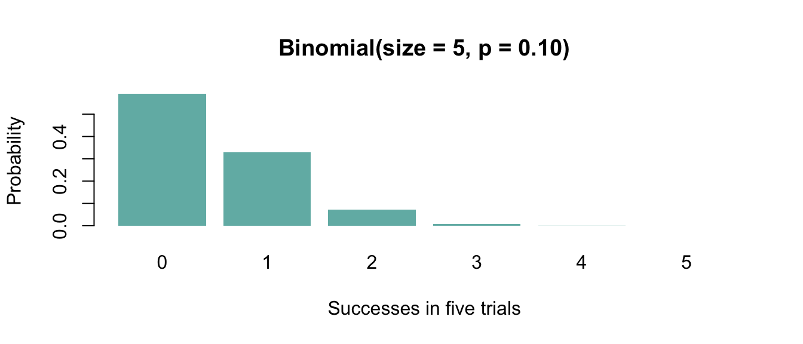

Code
plot_population(id)
Shayaan Tanveer
Each observation is Binomial(size = 5, p = 0.10); mean 0.5, variance 0.45, SE sqrt(0.45/n). The CLT n counts observations and is distinct from size = 5.

Rare successes produce skewness and discrete Q-Q steps. This expectation was documented during revision; I am not claiming it was a personal prediction made before the original run.
rbinom(n, size=5, prob=0.10) generates n counts, each from five trials. n controls observations in one sample, not the Binomial parameter. Mean is 0.5 and variance is 0.45.
The shared simulator repeats mean(generator(n)) B times and stores one number per sample. Diagnostics are calculated from that vector, not from the original observations. Both seeds save to different directories, and loading a plotted vector checks its mean, SD and Q-Q RMSE against the matching CSV row.
I generate B = 10,000 separate samples at each n using seed 7616. Seed 7617 checks sensitivity. The full tested grid is in the CSV; this table focuses on candidates for our practical-normality review.
| n | empirical_mean | theoretical_mean | empirical_se | theoretical_se | relative_se_error | skewness | excess_kurtosis | qq_rmse | |
|---|---|---|---|---|---|---|---|---|---|
| 82 | 20 | 0.500 | 0.5 | 0.150 | 0.150 | 0.001 | 0.295 | 0.169 | 0.120 |
| 83 | 30 | 0.501 | 0.5 | 0.123 | 0.122 | 0.001 | 0.248 | -0.028 | 0.101 |
| 84 | 50 | 0.499 | 0.5 | 0.095 | 0.095 | 0.003 | 0.163 | -0.035 | 0.074 |
| 85 | 60 | 0.500 | 0.5 | 0.087 | 0.087 | 0.002 | 0.153 | -0.045 | 0.067 |
| 86 | 75 | 0.500 | 0.5 | 0.077 | 0.077 | 0.000 | 0.109 | 0.050 | 0.057 |
| 87 | 80 | 0.500 | 0.5 | 0.075 | 0.075 | 0.004 | 0.138 | 0.046 | 0.058 |
| 89 | 100 | 0.500 | 0.5 | 0.067 | 0.067 | 0.000 | 0.098 | -0.025 | 0.050 |
| 92 | 200 | 0.500 | 0.5 | 0.048 | 0.047 | 0.006 | 0.077 | 0.005 | 0.038 |
Decision status: Practical judgment; borderline neighbors
Selected N: n = 75
Why I did not choose smaller tested values: At n=20-50 skew and steps are clearer; 60 remains borderline with Q-Q RMSE about 0.067 in both seeds. I do not require steps to disappear.
Issue / limitation: Binomial size=5 is a population parameter, not sample size n.
I use the practical standard approved during review: small remaining bends and steps are acceptable, not exact tail accuracy. Correct mean and SE alone cannot establish a Normal shape. Borderline neighbors mean that the exact minimum is uncertain.
a <- population_rows(id)
b <- read.csv("results/sensitivity_diagnostics.csv")
b <- b[b$population_id == id, ]
compare <- merge(a[, c("n", "qq_rmse", "skewness")],
b[, c("n", "qq_rmse", "skewness")], by = "n",
suffixes = c("_7616", "_7617"))
knitr::kable(compare[compare$n %in% sort(unique(c(ns, review_n_values[[id]]))), ], digits = 3)| n | qq_rmse_7616 | skewness_7616 | qq_rmse_7617 | skewness_7617 | |
|---|---|---|---|---|---|
| 7 | 20 | 0.120 | 0.295 | 0.123 | 0.315 |
| 8 | 30 | 0.101 | 0.248 | 0.100 | 0.252 |
| 9 | 50 | 0.074 | 0.163 | 0.079 | 0.199 |
| 10 | 60 | 0.067 | 0.153 | 0.067 | 0.149 |
| 11 | 75 | 0.057 | 0.109 | 0.060 | 0.136 |
| 12 | 80 | 0.058 | 0.138 | 0.059 | 0.129 |
| 14 | 100 | 0.050 | 0.098 | 0.057 | 0.152 |
| 17 | 200 | 0.038 | 0.077 | 0.043 | 0.108 |
The selected value is still a practical candidate under both seeds, although exact diagnostics change. Nearby candidates can be borderline: the scientific interpretation is more stable than an exact boundary integer. I do not choose the seed with the nicest plot.
---
title: "Binomial Small"
author: "Shayaan Tanveer"
---
```{r}
#| include: false
source("R/config.R")
source("R/distributions.R")
source("R/diagnostics.R")
source("R/simulate_means.R")
source("R/plotting.R")
source("R/report_helpers.R")
id <- "binomial_small"
```
## Population and theory
Each observation is Binomial(size = 5, p = 0.10); mean 0.5, variance 0.45, SE sqrt(0.45/n). The CLT n counts observations and is distinct from size = 5.
## Expectation based on theory
```{r}
#| fig-width: 7
#| fig-height: 3
#| fig-cap: "Original population shape; this is not the distribution of the sample mean."
plot_population(id)
```
Rare successes produce skewness and discrete Q-Q steps. This expectation was documented during revision; I am not claiming it was a personal prediction made before the original run.
## Evidence for my decision
### Important code, in plain language
rbinom(n, size=5, prob=0.10) generates n counts, each from five trials. n controls observations in one sample, not the Binomial parameter. Mean is 0.5 and variance is 0.45.
The shared simulator repeats mean(generator(n)) B times and stores one number per sample. Diagnostics are calculated from that vector, not from the original observations. Both seeds save to different directories, and loading a plotted vector checks its mean, SD and Q-Q RMSE against the matching CSV row.
I generate B = 10,000 separate samples at each n using seed 7616. Seed 7617 checks sensitivity. The full tested grid is in the CSV; this table focuses on candidates for our practical-normality review.
```{r}
#| results: asis
review_table(id)
```
```{r}
#| fig-width: 11
#| fig-height: 6
#| fig-cap: "Primary seed 7616. Orange curves use valid theoretical moments. Q-Q steps reflect discreteness; systematic curvature indicates shape differences."
decision <- selected_row(id)
ns <- na.omit(c(decision$below_n, decision$selected_n, decision$above_n))
plot_review_evidence(id, ns)
```
## My selected n and justification
```{r}
#| results: asis
report_selection(id)
```
I use the practical standard approved during review: small remaining bends and steps are acceptable, not exact tail accuracy. Correct mean and SE alone cannot establish a Normal shape. Borderline neighbors mean that the exact minimum is uncertain.
## Seed sensitivity
```{r}
a <- population_rows(id)
b <- read.csv("results/sensitivity_diagnostics.csv")
b <- b[b$population_id == id, ]
compare <- merge(a[, c("n", "qq_rmse", "skewness")],
b[, c("n", "qq_rmse", "skewness")], by = "n",
suffixes = c("_7616", "_7617"))
knitr::kable(compare[compare$n %in% sort(unique(c(ns, review_n_values[[id]]))), ], digits = 3)
```
The selected value is still a practical candidate under both seeds, although exact diagnostics change. Nearby candidates can be borderline: the scientific interpretation is more stable than an exact boundary integer. I do not choose the seed with the nicest plot.